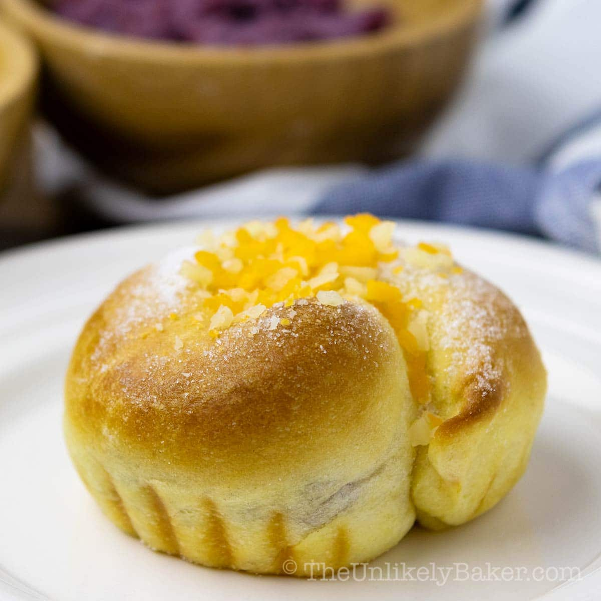

Back to Odin Recipes
Ensaymada

Description
Ensaymada is a Filipino sweet pastry. This is said to be a variation of the Ensaimades, a similar bread that uses pork lard as an ingredient that originated in Majorca (the largest island of Spain).
Ingredients
- 5 cups all-purpose flour
- ¾ cup butter melted
- ¾ cup white sugar
- 1 tsp salt
- 1 cup grated cheddar cheese
- 3 pieces raw eggs
- 1 pouch rapid rise yeast about 2 ¼ tsp
- 1 cup fresh milk warm
Steps to Bake Ensaymada
- Combine warm milk, yeast, and ½ cup sugar and stir until yeast and sugar dissolves in milk. Set aside to let yeast activate (approximately 10 minutes)
- In a mixing bowl, combine all the dry ingredients starting from the flour, sugar, and salt then mix thoroughly.
- Add the eggs, 1/2 cup butter, and activated yeast mixture (these are the ingredients that we combined in number 1) to the mixed dry ingredients. Mix thoroughly until all ingredients are evenly distributed and a dough is formed.
- Knead the dough until texture becomes fine.
- Put the dough back on the mixing bowl and cover the top with cloth. Allow the dough to rise for 2 hours.
- Put the dough on a flat surface and flatten. Punch the dough lightly to release the air inside.
- Using a dough slicer, divide the dough into four pieces.
- Roll each piece until shape becomes cylindrical.
- Cut the cylindrical dough into individual serving pieces (1 serving piece should weigh at least 80 grams).
- Put the sliced individual serving piece in a flat surface and flatten using a rolling pin.
- Combine ¼ cup melted butter with ¼ cup white sugar. Using a brush, paint the mixture on the flattened dough. Make sure to paint only the center part of the flat dough.
- Sprinkle some cheese over the painted area then seal the dough by folding opposite directions and rolling it until a long cylindrical shape is formed (about 14 inches in length).
- Start forming the spiral Ensaymada shape by crossing the two opposite ends of the dough. The first end should be placed under dough while the other end should be inserted in the middle. (see video for better comprehension)
- Place the dough in a baking tray with wax paper and cover with cloth. Set aside to rise for another 45 minutes
- Pre-heat the oven at 350 degrees Fahrenheit for 10 minutes. Remove cloth on top of the tray and bake the dough for 15 minutes at 350 degrees Fahrenheit.
- Remove the baked Ensaymada from the oven. Using the remaining melted butter and sugar mixture, paint the top of the baked ensaymada and sprinkle additional cheese.
- Serve hot.